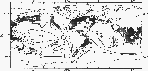
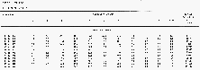

1.
INTRODUCTION
The interaction between the ocean and the atmosphere is a major factor
controlling seasonal and nonseasonal changes in both media. The wind stress
on the ocean surface, together with the density distribution within the
ocean, produces the broad pattern of ocean currents, including those in
regions where upwelling brings cold water from below to the surface thereby
influencing the sea surface temperature (SST). Other factors which affect
SST are: net radiative flux at the surface which is the sum of the incident
minus reflected solar radiation and the outgoing long-wave radiation, itself
dependent on SST; evaporation, also dependent on SST as well as on wind
speed and relative humidity; and sensible heat transfer, dependent on wind
speed and temperature difference between the sea and the air. SST is thus
a prime variable in governing energy exchange at the sea surface and is
itself partly determined by this energy exchange. The ocean-atmosphere
system is closely coupled through the boundary and it is of paramount importance
to be able to understand the boundary properties and their variations with
time.
The global climate system is composed of the atmosphere, the hydrosphere,
the cryosphere, the upper boundary region of the continent and the biosphere.
The largest thermal capacity in this system is of course the ocean, and
energy received from the sun in the summer at middle and high latitudes
is released to the atmosphere in winter thereby moderating both seasons.
Energy is also transferred by ocean and atmosphere to high latitudes, again
reducing the temperature differences that would otherwise arise due to
the much smaller flux of solar energy at high latitudes in winter. It is
also transferred from the summer hemispheres which has a surplus of received
energy, to the winter hemisphere, which is in deficit. It has long been
a goal of meteorologists and oceanographers to be able to reproduce the
energy cycle of the atmosphere and ocean by numerical models. The pioneering
paper in this field of general circulation models was by Phillips (1956)
which represented the atmosphere by two levels; building on this Smagorinsky
et al. (1965) and Manabe et al. (1965) constructed a more
comprehensive 9-level model of the atmosphere, and the techniques developed
were later applied to models which included the oceanic circulation as
well (Bryan et al. 1975). The same dynamical principles govern both
fluids (see, for example, the text by Gill, 1982). The field of coupled
ocean-atmosphere models has been very active for some time (Nihoul 1985).
Whether modelling the atmosphere or the ocean alone, or together as a coupled
system, it is imperative to have information about the interface (specifically
the SST, the wind stress and the energy exchange), as well as the interior
of the ocean (see, for example, the Atlas of Levitus 1982) and the atmosphere.
The sensitivity of the atmosphere over time-scales of a few months or
more to oceanic conditions, particularly SST, has been stressed by Namias
and other scientists in the USA; he recognized the need to understand the
physics of the coupled system before attempting to forecast over such long
periods (Namias 1975, 1983). In the United Kingdom, there has been a long-standing
interest in the influence of large-scale SST anomalies on the atmosphere
(Sawyer l965), and a major effort in long-range forecasting in the Meteorological
Office has made use of SST patterns (e.g. Ratcliffe and Murray 1970, Mansfield
1986); the status of this work has been described by Gilchrist (1986) and
Folland and Woodcock (1986).
In 1984 a World Meteorological Organization (WMO) Experts' Meeting on
Ocean-Atmosphere Interaction relevant to Long-range Weather Forecasting
initiated a program for the development of improved methods of analysing
SST in recognition of the outstanding importance of this parameter, especially
on a seasonal forecasting time-scale (World Meteorological Organization
1985). Progress in this work is summarized by Reynolds, Bottomley and Folland
(1989).
During the past 20 years, long-period changes in the environment have
been brought into focus by a number of studies. Firstly, it has been recognized
from a comprehensive study of deep-sea cores that the SST patterns during
the last ice-age, about 18,000 years ago, were quite different from the
present. Instead of warm water moving north-eastwards from the Atlantic
tropics towards northwest Europe as it does now, the flow was almost west-east
and north-west Europe was influenced by cold water with Scandinavia and
parts of the British Isles being covered by ice-sheets (Cline and Hays
1976). Appeal was made to the modern SST patterns to calibrate the ancient
records. Secondly, carbon dioxide (CO2) from the burning of fossil fuel,
and other trace gases from human activities, has been observed to increase
significantly in the atmosphere during the past 30 years, and concern,
based partly on results from numerical models, has been expressed that
atmospheric and oceanic temperature may rise by several degrees Celsius,
that the atmospheric circulation may change, that ice caps may melt, and
that sea level may rise and cause flooding in coastal cities. The serious
nature of some of the suggested consequences of such temperature rises
makes it important to check model simulations of climate using the best
estimates of atmospheric CO2 concentrations available for the past century
together with meteorological and oceanographic observations. For this purpose,
however, only data sets of the surface air temperature and of SST extending
back to about 1860 are available. Temperatures from land stations have
been influenced during this period by the growth of cities around the observing
sites, and temperatures measured by ships at sea have also been contaminated
as will become evident below: thus it is clearly important to establish
what corrections to the reported values are necessary to achieve a consistent
historical record, before examining the land and oceanic surface temperature
data for signs of climatic change that may be associated with increases
in atmospheric concentrations of CO2 (Ellsaesser et al. 1986).
Other recent major environmental perturbations that have attracted considerable
attention include the persistent drought in the Sahel which started in
the late 1960s, drought in the USSR in 1972 and in north-west Europe in
1976, and floods at a number of tropical Pacific sites during the El Niño
of 1982-83. Some of these anomalies of climate have been related to SST
changes: Brazilian drought (Hastenrath et al. 1984) and Sahelian
drought (Folland, Palmer and Parker, 1986) are two examples.
Taken together with the two above-mentioned topics of modelling and
long-range forecasting, these findings and events of the past 20 years
have evoked responses by a large number of scientists and institutions.
The WMO has cooperated with the International Council of Scientific Unions
(ICSU) to set up a World Climate Research Program (WCRP) which seeks to
determine to what extent climate can be predicted and the extent of human
influence on climate. In conjunction with UNESCO's Intergovernmental Oceanographic
Commission (IOC) these organizations completed a plan for a 10-year oceanographic
program to observe and model the complete thermohaline and wind-driven
global ocean circulation--the World Ocean Circulation Experiment (ICSU/WMO,
1985). Many of the topics in the WCRP require global SST and their variations
with time. The provision of the best available estimates of the global
SST distribution is the main aim of this Atlas.
At some later date it is expected that a detailed study, covering a
similar period, of wind stress and energy flux at the ocean surface will
be produced. Wind stresses have been published by Hellerman and Rosenstein
(1983). In the meantime we preserve some charts of energy flux that, although
limited to a 30-year period, have nevertheless been of great value in reconstructing
a coherent set of SST patterns for the past 120 years.
In the printed Atlas we stop the clock with the SST data collected by
the end of 1986 (except for the time-series which finish in September 1989),
apply the techniques described in the following sections, and record the
results in the form of maps and time-series for the use of the scientific
community. On the CD-ROM disk and magnetic tape, the same material is provided,
except that the 1 deg. resolution climatology is given in full, and that
the time-series reach the end of 1989. In addition, the material is repeated,
if different, based on an updated data bank and with the refined corrections
to SST incorporated where appropriate. The disk and tape also hold complete
sequences of uncorrected and corrected monthly SST anomalies for 1856-1989
on a 5 deg. latitude X longitude grid derived from this updated data bank,
with the refined corrections also in a separate file.
2. THE DATA SET
Ships' observations have been systematically recorded since the mid-19th
century when Maury (1852) put into action his plan to 'belt the earth
with stations'. In the past decade or so, the data have been archived in
computer-compatible form. Most of the sea surface temperature (SST) data
and the night-time marine air temperature (NMAT) data used in this Atlas
were taken from the Meteorological Office Main Marine Data Bank (MOMMDB)
(Shearman 1983). The MOMMDB itself was mainly based on a data set termed
TDF-11 from the US Climatological Center, Asheville, up to the early 1960s
(National Climatic Data Center 1968), on records received via international
exchanges as a result of WMO Resolution 35 from the 1960s until 1981 (World
Meteorological Organization 1963), and on data received directly from the
logbooks of British registered ships. However, as a result of failure to
receive certain tapes of data, there were blank areas in the Pacific in
the 1960s and early 1970s in the MOMMDB archive, and these were filled
with analysed SSTs on a 5 deg. latitude X longitude space-scale using a
marine data set from the Massachusetts Institute of Technology (MIT), which
had been derived from the Consolidated Data Set (CDS) assembled by the
US Navy Fleet Numerical Oceanography Center (FNOC) at Monterey, California
(Hsiung and Newell 1983). This was not done for NMAT because the MIT data
set was in the form of gridded values based on observations for all hours
combined.
The SST and NMAT anomalies for 1982 onwards were derived not from MOMMDB
but from messages received from ships and buoys in near-real-time in Bracknell,
United Kingdom, over the Global Telecommunication System (GTS).
The combined MOMMDB-MIT SST data set had, even in recent years, significant
areas without data west of Chile, in much of the Southern Ocean, and in
parts of the Arctic. To provide complete coverage of SST averages, which
is essential for many purposes, information from the global SST climatology
of Alexander and Mobley (1976), which includes estimates in data-sparse
regions, was incorporated into the averages for 1951-80 presented in this
Atlas. We recognize that their climatology is likely to be biased with
respect to the true climatology for 1951-80, because it is based on analysis
of data from a variety of earlier periods up to about the early 1960s,
and these periods were, on a global average, probably colder (Folland,
Parker and Kates 1984, Reynolds 1983). Further negative bias in their climatology
is likely to have resulted from uncompensated changes of instrumentation,
in particular the use of uninsulated canvas buckets until the 1940s (Folland,
Parker and Kates 1984, Wright 1986), though the instrumental biases fortunately
appear to be small in the Southern Ocean (Section 3(h)). We therefore merged
their climatology into the MOMMDB-MIT climatology with their values adjusted
to be consistent as far as possible with the MOMMDB-MIT climatology: details
are given in Section 4 of Appendix 1.
The MOMMDB data source for the Atlas totalled about 46 million non-duplicate
sets of historical log book observations with SST, and the GTS provided
over 10 million for the period 1982-89. At first sight, therefore, the
data base is poorer than that available in COADS, which apparently contained
72 million non-duplicates (of which 63 million included SST) up to 1979
(Slutz et al. 1985), though unexpected duplicates have recently
been discovered in it (Lander and Morrissey 1987). However, the difference
in quantities of data arises mainly from the years after 1950 (Figure 1)
when coverage is densest and considerable redundancy of information is
inevitable in many areas. Furthermore, the subsequent merging into our
data base of the analysed CDS fields will have reduced the shortfall in
MOMMDB in the 1960s and early 1970s in just those areas where information
was most lacking. The CDS itself is based on about 35 million sets of observations
(Hsiung and Newell 1983), though we estimate that its indirect inclusion
in our data base will not have increased our effective number of pre-1982
SST observations to as much as 63 million, because its use was mainly confined
to the Pacific and to 1961-72. The use of the climatology of Alexander
and Mobley (1976) to extend our coverage to the globe will not have significantly
increased our effective data base, because Alexander and Mobley's complete
coverage was the result of substantial interpolation in data-sparse areas,
particularly the Southern Ocean, along with extrapolation to an assumed
temperature at the climatological ice-edge.
Global coverage of SST is becoming routinely available in the form of
a blend of satellite and in situ data designed to reduce any systematic
biases in the satellite SST (Reynolds 1988). The existence of biases in
the original satellite data is documented in Reynolds, Folland and Parker
(1989) and Robock (1989).
Figure 1. Annual numbers of sea surface
temperature observations for the globe.
Table 1 gives, for selected areas, statistics of numbers of SST
data and percentages as a function of decade and of time of day. During
the 1930s there was a switch from measurements at 4-hourly to 6-hourly
intervals. There is no evidence of a systematic trend towards or away from
night-time as opposed to daytime data, either for the areas in Table 1
or for the area in the central equatorial Pacific examined by Barnett (1984).
Such a trend, had it occurred, could have caused spurious trends in SST.
The geographical coverage of the dataset during 1951-80 is discussed in
Section 4(c) and illustrated in Plates 49-60. Historical variations in
coverage are discussed in Section 4(j).
The heat-flux climatology differs from the other data in this Atlas
in that it is based entirely on the MIT data set. The observations used
are SST, MAT (merged day and night), humidity, cloudiness, and wind speed
for each individual month in the period 1949-79, calculated on a 5 deg.
latitude X longitude grid. A detailed description of the processing is
given by Hsiung (1985).
3.0 BASIC DATA PROCESSING
During the processing of marine data from the voluntary observing fleet,
a variety of problems must be taken into account and, as far as possible,
avoided, eliminated, or compensated for. In particular, it is necessary
to allow for the systematic biases, individual inaccuracies, and irregular
distribution in space and time, of marine observations.
Systematic errors may occur in the data set as a whole, because of systematic
developments in instrumentation, siting, or procedures (e.g. the change
from uninsulated bucket to engine intake or insulated bucket SST readings,
or the gradual increase in the elevation of MAT observations above sea
level as ships have become larger, or the use of portable screens or whirling
or aspirated psychrometers for the MAT thermometer as opposed to screens
fixed to the bridge). Some of these systematic errors were at least partially
compensated for by systematic instrumental adjustments described in subsection
(h) below and in Folland and Parker (1990).
The inaccuracy of individual temperature observations can result from
irregular procedures (e.g. leaving an uninsulated SST-bucket under cover,
or on deck for an excessive time before taking a reading); errors in instrumental
calibration; and errors in reading the thermometer (e.g. parallax error).
These errors are compounded by errors in recording and in computer keying,
though the latter are minimized by duplicate keying for automatic verification.
Further errors arise because of mistaken locations of ships. All these
types of errors, although sometimes systematic for a particular ship, can
be taken to be random when considering the whole data set which is based
on data from many ships: note that the random errors may be masked or emulated
by real variations of SST on small scales, especially in areas of strong
gradient of climatological SST (e.g. the western edge of the Gulf Stream).
The effects of random errors on monthly average values in particular years
and locations were reduced as far as possible by statistical procedures
(see following sections and Appendix 1) during the primary processing of
the data. The effects are of course substantially further reduced when
long time averages or large area averages are calculated.
The irregular small-scale geographical and temporal distribution of
data was taken into account by initially working with SST 'anomalies' (deviations
from climatology) on a 1 deg. latitude X longitude space-scale and with
5-day time resolution as a basic unit. If monthly SST values (as opposed
to anomalies) averaged over 5 deg. latitude X longitude areas had been
used as the working unit, spurious fluctuations and long-term biases could
have resulted from, for example, changes of ships' tracks to favour the
climatologically coldest or the climatologically warmest portion of the
5 deg. area or month. There are, of course, insufficient data to provide
final analyses on a time scale of 5 days.
In the following subsections we discuss the main features of the data
processing. Figure 2 presents a schematic of the overall processing, and
Figures 3 to 5 illustrate the procedures for quality control, including
the development of the background field, and the formation of climatologies.

Figure 2. Sea surface temperatures: overall
processing.
(a) Removal of duplicates from MOMMDB (Box 1 of Figure 3)
Duplicated sets of observations were removed from the MOMMDB as described
in Section 1 of Appendix 1.
(b) Removal of unlikely extreme values (Boxes 2 to 4 of Figure
3)
(i) Rejection of all SST values below the physical limit of -2 deg.
C will have caused estimates of true SST near this limit to have been slightly
positively biased, by including only values with positive errors. The upper
limit of 37 deg. C is reasonable in the open ocean for SST measured from
ships, though higher values are occasionally reported in, for example,
the Red Sea, Persian Gulf and eastern Mediterranean. The aims of this limit
are not only to remove unphysical values (under current climatic conditions
open ocean SST over 32 deg. C is rare) but also to remove any significant
impact of occasional real, excessively high values in harbours etc., because
it is especially important to make representative estimates of the higher
SST values for running numerical models. Some reports of very high SST
(e.g. Kindred 1986) are of skin temperature measured from satellites. The
problems of 'skin' (mm thickness) and 'thin surface layer' (cm thickness)
SST are beyond the scope of this Atlas which has a 'bulk' SST database.
The limits for MAT were -15 deg. C and 40 deg. C.
(ii) The remaining MOMMDB data were used to create climatological 'background
fields' of SST and NMAT (Figure 4: see also Section 2 of Appendix I) with
a 1 deg. latitude X longitude resolution to resolve strong gradients and
a pentad time resolution (January 1-5 etc.) to give good definition of
the seasonal cycle. To give optimum coverage, the background fields were
based on the entire MOMMDB period from 1854 to 1981: they were smoothed
in time and space by filtering through harmonic and polynomial analysis.
Figure 3. Quality control of sea surface
temperatures.
Figure 4a. Formation of background field.
Figure 4b. Identification of qualifying
1 deg. areas within a given 10 deg. latitude x longitude area.

Figure 4c. Formation of harmonically-smoothed
climatology averaged over qualifying areas.
Figure 4d. Completion of initial pentad
series for non-qualifying areas.
(iii) SSTs in the MOMMDB deviating by more than 6 deg. C from the SST
background field were then discarded, along with NMATs deviating by more
than 10 deg. C from the NMAT background field (Boxes 3 and 4 of Figure
3). The broader criterion for NMAT values allows for greater temperature
variability in the atmosphere than in the ocean. Tests with broader criteria
for SST (±7 deg. C or more) in the 'El Niño' region of the Tropical East
Pacific showed that there was insignificant bias or data loss in the period
from 1854 to 1981 when the 6 deg. C criterion was used.
(c) Creation of 5 deg. latitude X longitude area monthly values from
MOMMDB data
The temperatures remaining, after the criteria described above had been
applied, were averaged for each available 1 deg. latitude X longitude area
and pentad (e.g. 50 deg.-51 deg. N, 20 deg.-21 deg. W, 1-5 January 1927)
(Box 5 of Figure 3). Often these averages consisted of a single value.
The result was converted to a difference from the background field value
for each 1 deg. area and pentad. These 'anomalies' were collated for each
5 deg. area (e.g. 50 deg.-55 deg. N, 20 deg.-25 deg. W) and month (e.g.
January 1927). The definitions of months are in terms of whole numbers
of pentads as in Table Al.2 in Appendix 1. Unless there were fewer than
four anomalies (Boxes 6 and 7 of Figure 3), they were then subjected to
'winsorisation' (Boxes 9 and 14 of Figure 3). Winsorisation (Afifi and
Azen 1979) is a simple but powerful method of censoring data to remove
the effects of outliers. In the form used here (chosen after empirical
tests of a variety of versions of the technique), all anomalies in the
first (i.e. top) and fourth (i.e. bottom) quarters of the ranked distribution
of 1 deg. area pentad anomalies in a given month and 5 deg. area were individually
set to the value of the uppermost anomaly in the second quarter or the
lowermost anomaly in the third quarter respectively. The average anomaly
in the 5 deg. area and month was then taken as the arithmetic average of
the adjusted distribution. Strictly speaking, winsorisation should only
be used if the 'true' 1 deg. pentad anomalies (i.e. after removal of instrumental
errors etc.) have a Gaussian distribution in a given 5 deg. area and month.
This may not be true in coastal regions where local upwelling results in
small areas of cold surface water, but insofar as the quartile boundaries
show skewness, the winsorisation will have retained skewness in the anomalies.
The screening of the data by winsorisation reduces the subsequent need
for spatial smoothing, thereby maintaining the important SST gradients
more faithfully.
The average anomaly was added to the 5 deg. area monthly average of
the background field to give the SST or NMAT for that particular area and
month (Box 16 of Figure 3).
(d) Quality control flags in the MOMMDB-based data set
Quality control flags were set according to the criteria outlined in
Boxes 6 to 15 of Figure 3. The range and variance tests are described in
Section 3 of Appendix 1.
Most of the flagged data have been included in the maps shown in this
Atlas, because the improved coverage appeared, in experimental tests, to
outweigh the penalty of the extra scatter involved. Much of the scatter
had already been removed by the removal of unlikely extreme values (Section
3(b) above). However, 5 deg. area monthly values based on fewer than three
1 deg. area pentad values are excluded from the maps of monthly anomalies,
and those based on only one 1 deg. area pentad value are also excluded
from the maps of decadal anomalies.
(e) Merging of MIT SSTs into MOMMDB-based SST data set
A problem affecting the period 1961-72 was the failure of many Pacific
data to reach the MOMMDB, recently traced to a failure to receive certain
magnetic tapes. Blank 5 deg. areas in the MOMMDB-based monthly SST data
set were therefore filled with analysed calendar-monthly SST values from
the MIT 5 deg. latitude X longitude resolution data set (Hsiung 1985).
Flags distinguish these data on the disk or magnetic tape available with
this Atlas.
The MIT data agreed well with geographically adjacent MOMMDB-based data:
the very few MIT 5 deg. area monthly values that differed by more than
3 deg. C from the average of the available adjacent 5 deg. area monthly
values in the combined data set were excluded, while a small minority of
other MIT values were accepted after some adjustment.
(f) Formation of SST averages for 1951-80 (Figure 5)
The period 1951-80 was chosen for the climatological averages of SST
because of the relatively good coverage. A further factor was that globally-
averaged climatic changes appear to have been small during this period,
though interhemispheric and smaller scale changes were certainly not absent
(Folland, Parker and Kates 1984, Folland, Palmer and Parker 1986, Oort
et al. 1987). Furthermore, the period 1951-80 was probably not too
seriously affected by systematic changes in observing methods.
(i) Preliminary monthly 5 deg. latitude X longitude area averages
The preliminary climatology for 1951-80 was calculated for each 5 deg.
area and calendar month as described in Boxes 1 to 3 of Figure 5. The available
decades were weighted equally and this slightly reduces the local bias
which could result from a more irregular sampling of interdecadal climatic
fluctuations. At the same time, the exclusion of decades with fewer than
5 constituent 5 deg. area values reduces the local sampling error which
would otherwise result from interannual fluctuations.
(ii) Preliminary pentad 1 deg. latitude X longitude area averages
The smooth 1 deg. area pentad background climatology field and the preliminary
monthly 5 deg. area averages for 1951-80 were used to derive preliminary
1 deg. area pentad climatological averages for 1951-80, as described in
Boxes 2 and 4 to 7 of Figure 5. The overall effect of this procedure was
to provide, for blocks of size 5 deg. latitude X longitude, a first iteration
of the background 1 deg. area averages, which are based on all data, towards
a climatology for 1951-80, while retaining the valuable smoothing contained
in the background field. Some areas still had no 1 deg. area or 5 deg.
area averages, particularly west of Chile, in the Southern Ocean, and in
parts of the Arctic.
(iii) Blended averages
The SST averages needed to be made spatially complete, especially for
the benefit of future numerical experiments, and a complete monthly climatology
was therefore created by blending the above MOMMDB-MIT 1 deg. area climatology
with the 1 deg. area monthly SST and ice-limit climatology of Alexander
and Mobley (1976), and smoothing the result (Boxes 8 to 10 of Figure 5),
in the manner described in Section 4 of Appendix 1. The blended and smoothed
1 deg. area monthly averages were averaged into 5 deg. area monthly averages.
The smoothed and blended 1 deg. area and 5 deg. area monthly SST climatologies
resulting from the above processes provide the SST averages representative
of the period 1951-80 created for this Atlas. All the 5 deg. area averages
are printed in the Atlas. Samples at 1 deg. latitude X longitude area resolution
are presented for regions of particular interest, e.g. near major ocean
currents, but the entire 1 deg. area averages data set, together with
quality-control flags indicating ice limits and places where blending was necessary,
is included on the disk or magnetic tape associated with the Atlas. A flag
is also used in the 5 deg. latitude X longitude resolution averages to
indicate which values have been influenced by the Alexander and Mobley
analyses. In addition, both 1 deg. area and 5 deg. area averages are repeated
on the disk and tape, based on an updated version of MOMMDB which did not
require supplementing with MIT data. The new climatology differs only slightly
from the old, except near Japan, and in a few parts of the Southern Ocean
where many of the extra data are concentrated.
(g) Formation of averages of night-time marine air temperature
Climatological 1 deg. area pentad averages of NMAT for 1951-80 were
computed from the 5 deg. area MOMMDB data and the NMAT background field
using the methods given for SST in (f) (i) and (ii) above and in Figure
5. These averages were, however, regarded as the final 1 deg. area pentad
averages of NMAT, as there was no immediate requirement to merge them with
a spatially complete climatology for numerical modellers. The 1 deg. area
pentad averages were averaged into calendar monthly values and then spatially
over 5 deg. areas to produce 5 deg. area monthly NMAT averages. These were
used in conjunction with the final SST 5 deg. area monthly averages to
give the (globally incomplete) monthly air-sea temperature difference averages
included in this Atlas.
(h) Instrumental and procedural corrections
(i) SST
The historical time-series and decadal seasonal averages of SST anomalies
in this Atlas span a major change in SST instrumentation from mainly uninsulated
canvas or metal
Figure 5. Marine temperatures: formation
of climatologies for 1951-80.
buckets (Figure 6) (maybe with, in earlier years, some wooden, leather
or rubber buckets) to mainly either insulated buckets (Figure 7) or
engine-intake or hull-sensor thermometers. Engine intake readings may be several
tenths of a degree warmer than bucket reports (e.g. see Barnett 1984).
It is believed that engine-intake readings largely replaced uninsulated
bucket observations around the beginning of 1942 (Folland, Parker and Kates
1984), though some engine-intake thermometers were already in use in the
early 20th Century (Brooks 1926). The main evidence for the sudden change
comes from the SST data themselves. Around 1942, SST worldwide became suddenly
higher relative to marine air temperature (Folland, Parker and Kates 1984).
Also, relative to the climatology for
Figure 6. Meteorological Office Mk. IIA
canvas sea-temperature bucket.
Figure 7. Meteorological Office rubber
sea-temperature bucket.
1951-80, spurious annual cycles of SST are visible in most extratropical
data until about 1942. Wright (1986) has documented this effect for the
North Pacific. Figure 8 demonstrates the cycles for an area of the Gulf
Stream where air-sea temperature contrasts are especially large in winter
leading to excessive winter cooling of uninsulated buckets but a
much smaller cooling in summer. In the last three or four decades,
insulated buckets have been used extensively (World Meteorological Organization,
WMO No. 47, 1956 onwards)
Figure 8. Monthly SST anomalies (relative
to 1951-80) for 1923 to 1937, 35 deg. -45 deg. N, 60 deg. -70 deg. W, with
and without provisional corrections for the use of uninsulated buckets.
Tick marks are in July of each year.
though uninsulated buckets were used to a limited extent until at least
the late 1960s (e.g. Marine Observer's Handbook, 1969).
We have not corrected SST for January 1942 to the present, because observations
from insulated buckets, engine intakes, hull sensors, and a few uninsulated
buckets are generally inextricably mixed in the data archives. Furthermore,
using data for 1975-81 for which the MOMMDB contains indicators denoting
'bucket' or 'non-bucket', we have found that the discrepancies between
data of these categories are relatively small, averaging -0.08 deg. C (bucket
data being colder) for the globe for the year as a whole, and ranging from
typically -0.25 deg. C in lower-mid-latitude winter to +0.2 deg. C in midlatitude
summer. Because the reference period 1951-80 contains a mixture of bucket
and non-bucket data, the average error will be markedly smaller than that
which would result from either type. In addition, the very good consistency
of the post-1945 NMAT changes with those of SST (Plates 292-301) supports
the reliability of the regionally averaged data without a correction for
the differences between insulated buckets and engine intakes at this stage.
Therefore we feel that there is at present good justification for applying
no corrections to the recent SST data. It is recognized, though, that further
attention to any residual seasonally-varying biases may be desirable in
the future.
We have, however, chosen to replace the constant correction of +0.3
deg. C applied to SST data for before 1942 by Folland, Parker and Kates
(1984) (Scheme A in Table 2) (see also Brooks (1926), Lumby (1928) and
James and Fox (1972)) by a set of geographically and seasonally varying
corrections. The correction of +0.3 deg. C was designed to remove the global
annual average bias between SST and corrected NMAT anomalies which was
remarkably constant until 1941. See (ii) below for corrections to NMAT.
However, the constant correction did nothing to remove the above-mentioned
spurious annual cycles of several tenths deg. C which were widely evident
in extratropical SST anomalies up to 1941. We have therefore developed
a technique to remove these cycles, the phase and magnitude of which are
consistent with the predominant use of uninsulated buckets to measure SST
before 1942 (Figure 8). One approach (Wright 1986) is simply to correct
the SST anomalies to agree with co-located NMAT anomalies calendar month
by calendar month by applying a local correction which is constant over
an extended period. We preferred, however, to experiment with physically
based models which are largely independent of any remaining, and unknown,
systematic uncertainties in NMAT, and which appear in practice to give
reasonable sets of corrections.
A. Provisional corrections
The models assume that the freely evaporating water in an uninsulated
canvas bucket with an open-top water surface is kept agitated and so has
uniform temperature. Account is taken of the heat fluxes arising from the
following causes during the process of measurement, given climatological
winds and temperatures (derived from MOMMDB for 1951-80) and humidities
and cloudiness (derived from CDS for 1949-79):
1. The difference between the external air temperature and the temperature
of the water in the bucket;
2. The difference between the atmospheric vapour pressure and the saturation
vapour pressure of the freely evaporating surface, assumed to be at the
temperature of the water in the bucket;
3. The strength of the wind around the bucket, based on climatological
data but with allowances for sheltering by the ship's structure and for
an assumed mean ship's speed of 4 m s-1, assuming random ships'
headings relative to the wind;
4. The influence of the mass of the thermometer, having a fixed assumed
thermal capacity and considered to be initially at the air temperature,
when plunged into the bucket;
5. The short-and long-wave radiation incident on the bucket.
The combination of (1), (2) and (3) and to some extent (4) renders uninsulated
bucket SST values too cold in mid-latitude winter; whereas (5) and to a
small extent (4) can make uninsulated bucket SST values less cold, or
even a little too warm, in mid-latitude summer. The net result is spurious
annual cycles of pre-war SST anomalies relative to a post-war SST climatology
which contains a much smaller proportion of uninsulated bucket data. Corrections
based on a variety of models (assuming, for example, different sizes of
bucket or different degrees of reduction of the wind speed by the ship's
structure) were found to be very similar, so long as the period allowed
for heat transfer was varied until the corrections, when applied to observed
SST, minimized the spurious annual cycles. The corrections applied, for
a given calendar month and location, were the average of the corrections
derived from several models. In view of the possibility (Brooks 1926, quoting
Krummel 1907) that buckets were more often exposed to direct solar radiation
in the 19th century, a set of models assuming the incidence on the bucket
of full climatological direct monthly mean solar radiation was used for
the period 1856-1900, whereas for 1901-41 25% of climatological direct
solar radiation was assumed, yielding corrections which were more positive
by 0.02 deg. C to 0.04 deg. C than the corrections for the same calendar
month and location for the earlier period. The corrections are described
as Scheme B in Table 2. Further details of the technique are given in Folland
and Parker (1990), who, however, used corrections as in Scheme C in Table
2, i.e. intermediate between the "provisional" and "refined"
corrections used in this Atlas.
The corrections were applied with a 5 deg. latitude X longitude resolution,
separately for each calendar month. The corrections for 1856-1900 for June
and December, which in general represent opposite extremes of the annual
cycle of corrections, are illustrated in Figures 9a and 9b. For both epochs
the corrections are generally positive, especially in mid-latitude winter
and in the tropics. The largest corrections are in winter over the Gulf
Stream and the Kuroshio where the sea is much warmer than the air. The
corrections largely succeed in removing the spurious annual cycles (Figure
8), and have been applied to the decadal seasonal SST anomalies shown in
Plates 244-291.
B. Refined corrections
The refined corrections (Scheme D in Table 2) include the following
additional developments incorporating and superseding those in Folland
and Parker (1990), and Parker and Folland (1990).
1. It was assumed, mainly on the basis of Maury (1858), Jansen (1866)
and Toynbee (1874), that 25% of the buckets used in 1856 were wooden, and
that this percentage decreased linearly to zero by 1905. The wooden buckets
had greatly reduced heat transfer through their sides relative to canvas
buckets, but the evaporation from the upper water surface in the wooden
buckets was uninhibited. The remaining buckets were assumed to be canvas.
Thus in 1881, for example, about 12% of the buckets were assumed to be
wooden and 88% canvas.
2. The assumed percentage of climatological direct solar radiation
incident on the buckets was 50% ('half-sun') before 1870 and for all wooden
buckets; for canvas buckets it decreased from 50% in 1870 to 0% ('no sun')
in 1940 (encouraged by Krummel (1907) and Lumby (1928)). The reduction
relative to the values used in the provisional corrections, though supported
by instructions by Maury (1858) and Jansen (1866) that the bucket be placed
in the shade on deck after hauling, is limited by the silence of other
instructions on this aspect. The effect of direct solar radiation on the
corrections is small (section A above).
3. Ships' speed was assumed to be 4 m s-1 (on average) before
1870 and whenever wooden buckets were used. Between 1870 and 1940, mean
ships' speed was assumed to increase linearly with time from 4 m s-1
to 7 m s-1 for ships where canvas buckets were used. The value
4 m s-1 represents typical speeds of sailing ships estimated
from passage times; the value 7 m s-1 and the date 1940 were
derived from logbooks of UK ships more recently than the work reported
by Folland and Parker (1990). Thus the corrections applied to SST data
for 1881, for example, were the following weighted average: 0.12 multiplied
by wooden bucket corrections assuming half-sun and ships' speed of 4 m
s-1, plus 0.74 multiplied by canvas bucket corrections assuming
half-sun and ships' speed of 4 m s-1, plus 0.14 multiplied by
canvas bucket corrections assuming no sun and ships' speed of 7 m s-1.
Because the effects of ships' speed on the corrections are nearly linear,
this weighting procedure is justified. The change from 4 m s-1
to 7 m s-1 increases the corrections by about 0.15 deg. C in
the tropics, 0.1 deg. C in midlatitude summer, and 0.05 deg. C in mid-latitude
winter.
4. Most of the Pacific SST data for 1933-38, being Japanese according
to indicators in MOMMDB, were compensated for the apparent truncation of
decimal values of SST in Japanese data.
The globally averaged refined correction varies with season and with
data coverage. On an annual average it was 0.22 deg. C for 1856-70 (compare
0.28 deg. C for the provisional corrections, Figure 9c), rising to 0.38
deg. C for 1931-40 (compare 0.33 deg. C for the provisional corrections).
Compare also the correction of 0.3 deg. C assumed by Folland, Parker and
Kates (1984). The refined corrections are included on the CD-ROM disk and
magnetic tape.

Figure 9a. Provisional corrections to
uninsulated bucket SST applied up to 1900, June. Tenths deg. C.
Figure 9b. Provisional corrections to
uninsulated bucket SST applied up to 1900, December. Tenths deg. C.
The time-series (plates 292-301) incorporate the refined corrections,
in order to convey the best available estimates of large-scale climatic
changes of marine surface temperatures. However, it is important to realize
that even these corrections could be further revised if additional information
becomes available on early observational practices.
Note that the corrections assume that the climatological average atmospheric
conditions for about 1951-80 existed throughout the historical period.
We allowed for nonlinearity in the influence of the wind speed by computing
corrections weighted by the probability density function of MOMMDB wind
speeds for 1951-80 for each calendar month and 5 deg. area. Given current
knowledge of observing practices, this procedure is regarded as adequate,
but eventually it may be worth attempting to correct individual observations
using the winds and air and sea temperatures at the time of observation.
In the meantime, the corrections in a given 5 deg. (or even 10 deg.) latitude
X longitude area and given month, should, because of short-term and
inter-annual variability in environmental conditions, only be regarded as meaningful
over an extended period of data, e.g. a decade or longer. The corrected
monthly mean data for before 1942 in a given year and region are thus more
uncertain than are modern data, even when the number of constituent observations
is the same.
Figure 9c. Globally averaged corrections
to SST (A) and NMAT (B).
(ii) Marine air temperature
For marine air temperature, our main precaution has been to use night-time
data to avoid most of the effects of on-deck solar heating (Glahn
1933, Hayashi 1974, Folland, Parker and Kates 1984). Night-time has been
defined as having the sun below the horizon.
We have applied the following corrections to the MOMMDB-based NMATs
to compensate for assumed increases in deck elevation (Scheme D in Table
2).
| Period |
Deck Elevation |
Correction
(relative to 1951-180 standard) |
Up to 1890
1891-1930
1931-onwards |
6 m
Linear increase
15 m |
-0.15 deg. C
Linear change
zero |
The history of deck elevation was deduced from barometer-cistern elevations
given in logbooks of UK ships, and from information supplied by the marine
section of the Meteorological Office, such as the lists in Appendix 2,
taken from the 1857 annual report of the Director of the Meteorological
Department of the Board of Trade, Admiral Fitzroy. The increase in heights
was caused by the rapid change from sail to steam and the accompanying
increase in the size of ships. There is clearly some uncertainty in the
magnitude and timing of this increase, but this should not seriously distort
the relative changes in NMAT between 1890 and 1930, as the uncertainty
in the change of correction resulting from the height of the screen alone
is only a few hundredths of a degree over the globe as a whole. Recent
(post-1960) changes in elevation (WMO No. 47) have, on average, been only
about 2 metres, and therefore no further deck-elevation corrections have
been made.
The corrections assume a nominal global mean vertical profile of potential
temperature and wind speed based on surface-layer similarity theory (after
Large and Pond, 1982) with air (10m)-sea temperature difference = -0.9
deg. C, 10m wind speed = 6 m s-1, and Richardson number Ri =
-0.01. A single global mean profile can be chosen because the corrections
are insensitive to reasonable variations in the shape of the profile. For
example, if the profile is changed to represent conditions when cold air
in winter crosses relatively warm mid-latitude ocean currents (Ri = -0.04
and air (10 m)-sea temperature difference = -5 deg. C with 6.5 m s-1
wind at 10 m (taken from the CDS climatology)), the correction up to 1900
becomes -0.25 deg. C, whereas in 'neutral' conditions (Ri = 0 and air (10
m)-sea temperature difference = -0.1 deg. C) the correction becomes -0.09
deg. C (dry adiabatic). It is clear from Plates 88-99 that global and most
local monthly climatological air-sea temperature differences lie well within
these limits, and that therefore the appropriate correction is unlikely
to be far from -0.15 deg. C.
For the period 1856-85, positively-biased NMAT anomalies were evident
over the Atlantic, especially over the Gulf Stream in winter when they
averaged about 2 deg. C according to fields of anomalies of air minus sea
temperature (not shown). Therefore the NMAT anomalies over the Atlantic
were adjusted where necessary to make their 30-year average consistent
with that of co-located SST anomalies with refined corrections. This adjustment
was made separately for each of the four seasons (winter = December to
February etc.) but with subsequent time-smoothing to make March (May) adjustments
equal to the average of those for winter (summer) and spring, and correspondingly
for September and November. The use of 30-year average differences in the
adjustments retained real inter-annual variations of air minus sea temperature
difference while removing the positive biases in the NMAT. Possible reasons
for the biases are:
1. On the small 19th century ships of some nations, there may have been
a tendency to read the air temperature thermometer from within the bridge
area in rough winter conditions. For example, the observers on The Netherlands'
ships (which probably provided most of the observations over the Gulf Stream
up to 1880 according to indicators in the MOMMDB) used no screens and were
instructed to keep the thermometers dry (Jansen 1866): thus, in conditions
of rain or spray, they may have carried them under cover. The observations
would then have been affected by ship's internal heat. This tentative suggestion
is supported by a preliminary analysis (not shown), using individual observations,
of MOMMDB marine air temperature anomalies for 40 deg.-50 deg. N, 20 deg.-
50 deg. W as a function of wind strength, showing increasing relative warmth
with increasing wind speed above Beaufort force 5 for the period 1856-80.
The reverse tendency is seen for 1881-1900 and all subsequent epochs.
2. Some instruments were fixed to the bridge, and a variety of instruments
and screens, or no screens at all, may have been in use, with an uncertain
effect on night-time values (Glahn 1933, Stein 1933, Walden 1952).
In addition, for the period 1876-93 we replaced all NMAT anomalies over
the Mediterranean and Northern Indian Ocean by corrected SST anomalies,
because the NMAT appeared to be excessively high there too (often by several
deg. C). Although the reasons are far from certain, the high values might
have resulted from use of the deck for covered storage by ship-owners seeking
to avoid tariffs on below-deck storage when using the recently opened Suez
Canal (Steele 1872).
No corrections have been applied for changes of instrumentation used
for observing marine air temperature, because of lack of accessible information
for the earlier years. In recent decades the changes in instrumentation
appear to have been slight (Table 3).
During the Second World War there were marked inhomogeneities in NMAT
which did not appear in daytime MAT to any significant extent (Folland,
Parker and Kates 1984). We used the daytime MAT as a reference to compute
the following corrections to NMAT:
Apr 1940-Dec 1941 -0.1 deg. C everywhere
Jan 1942-Sep 1945 -0.6 deg. C in Atlantic N of 20 deg. N
-0.9 deg. C in Pacific N of 25 deg. N
-0.9 deg. C in Pacific 20-25 deg. N,
W of 165 deg. W
-0.5 deg. C elsewhere
The dates of application were deduced by comparison of time-series of
NMAT and daytime MAT, and the geographical boundaries were decided on the
basis of maps of the difference between anomalies of NMAT and daytime MAT
with respect to a post-war climatology. These corrections are amongst the
most uncertain in this Atlas, but there is little doubt that the wartime
NMATs were artificially too high.
All these uncertainties relating to early NMAT data underline the
value of developing corrections to SST which are independent of these NMAT
data.
Table 2. Marine corrections used in recent papers and in this Atlas
a. List of SST correction schemes
A. 1856-Mar 1940 +0.3 deg. C
Apr 1940-Dec 1941 +0.25 deg. C
B. 1856-1900 Average of corrections from 4 canvas-bucket
models in set "BUCKT1". (100% climatological
direct solar radiation: 4 m s-1 ships' speed).
1901-41 Averages of corrections from 4 canvas-bucket
models in each of sets "BUCKT1", "BUCKT2" were
given respectively 25% and 75% weight. (Overall
25% climatological direct solar radiation:
4 m s-1 ships' speed).
C. 1856-90 Average of corrections from 8 canvas-bucket
models in set "BUCKT3". (50% climatological
direct solar radiation: 4 m s-1 ships' speed).
1911-41 Average of corrections from 4 canvas-bucket
models in set "BUCKT4". (No direct solar radiation:
7 m s -1 ships' speed).
1891-1910 Linear transition between "BUCKT3" and "BUCKT4".
D. 1856-1905 Weighting W9 of weighted average of corrections
from 4 wooden-bucket models in set "BUCKT9"
decreased linearly from 25% to zero. ("BUCKT9"
assumes 50% climatological direct solar radiation
and 4 m s-1 ships' speed. Within "BUCKT9",
models of buckets with insulating (conducting) sides
are given 75% (25%) weight).
1856-1870 Weighting W3 of "BUCKT3" = 100% -W9.
1871-1940 Weighting W3 of "BUCKT3" = (100% -W9) (1940-year)/70.
1871-1941 Weighting W4 Of "BUCKT4" = 100% -W9 -W3.
1933-38 Pacific data adjusted to compensate for truncation
of decimals in Japanese data.
b. List of NMAT correction schemes
Elevation World War 2 Other
A Up to 1900 -0.13 deg. C April 1940-Dec 1941 -0.1 deg. C None
(w.r.t. 1901-15 -0.07 deg. C Jan 1942-Sep 1945 -0.5 deg. C
1951 1961-70 0.02 deg. C
-60) 1971-75 0.06 deg. C
1976 onwards 0.09 deg. C
B Up to 1900 -0.15 deg. C Apr 1940-Dec 1941 -0.1 deg. C 1876-93 NMAT anomalies
1901-15 -0.09 deg. C Jan 1942-Sep 1945: set equal to corrected
1916-60 -0.02 deg. C -0.9 deg. C in Pacific SST anomalies in
1971-75 0.01 deg. C north of 25 deg. N and Mediterranean and
1976 onwards 0.02 deg. C 20-25 deg. N west of 165 deg. W North Indian Ocean
-0.6 deg. C in Atlantic
north of 20 deg. N
-0.5 deg. C elsewhere
(in addition to elevation correction)
C Up to 1890 -0.15 deg. C As B As B
1891-1910 Linear rise
to zero
D Up to 1890 -0.15 deg. C As B i) As B
1891-1930 Linear rise ii) 1856-85 30-year
to zero average NMAT
anomalies for
given season
adjusted to equal
30-year average
corrected SST
anomalies in much
of Atlantic.
c. Corrections applied in listed references
Reference SST corrections NMAT corrections
Folland et al. (1984) A A
This Atlas as
reviewed (Feb 1988) B B
Newell et al. ( 1989) B B
Folland and Parker (1990) C C
Parker and Folland (1990) C C
This Atlas as "Provisional" = B D
revised (Mar 1990) "Refined" = D
Table 3
PERCENTAGES OF SHIPS WITH PARTICULAR INSTRUMENTATION USED FOR
OBSERVING MARINE AIR TEMPERATURE
Source: WMO No. 47, International list of Selected,
Supplementary and Auxiliary Ships
(published annually since 1956)
INSTRUMENT TYPE YEAR APPROXIMATE POST
WORLD WAR II
1956 1971 1986 STANDARDIZED
PERCENTAGES
Screen (not ventilated) 49 43 45 45
Ventilated screen 2 3 7 5
Sling 15 27 18 20
Whirling psychrometer 22 14 10 15
Aspirated psychrometer <<1 8 9 5
Unscreened 2 2 1
Mix of types 0 <<1 <1
No information given 10 3 10 10
TOTAL NUMBER OF
SHIPS LISTED 2572 6597 7547
NOTE: The smaller total number of ships listed for 1956 was partly because
data for Polish and Russian ships were missing, but was also a result of
smaller numbers of ships for the countries included.
(i) Individual monthly 5 deg. latitude X longitude area anomalies
The blended 1951-80 5 deg. area SST averages were subtracted from the
individual MOMMDB-MIT 5 deg. area monthly SSTs to produce 5 deg. area monthly
SST anomalies up to 1981. These anomalies had a very variable coverage
limited by the MOMMDB-MIT data set.
Monthly NMAT anomalies up to 1981 (used in the time-series in Section
4(k)) were derived on 5 deg. latitude X longitude resolution in a similar
manner using the climatological averages of NMAT described in Section 3(g)
and the MOMMDB 5 deg. area monthly NMATs.
The SST anomalies for 1982 onwards were derived from messages received
in near-real-time at the Meteorological Office over the GTS. Duplicates
were removed as before, and observations below -2 deg. C or above 40 deg.
C were discarded, thus probably introducing slight positive biases near
ice margins, and slightly overstressing landlocked tropical waters (see
Section 3(b) above). Observations more than 7.5 deg. C different from the
relevant (final) 1 deg. area pentad climatological average were also discarded
. This broader criterion (compare 6 deg. C in (b) above) accepts the high
SST which took place in the eastern tropical Pacific in the strong 1982-
83 El Niño (Newell and Hsiung 1984, Newell 1986). Accepted values were
averaged over a given 1 deg. area and pentad, and the averages were converted
to anomalies from the final 1 deg. areal 1951-80 pentad averages. These
anomalies were then used to compute winsorised (where possible) mean anomalies
for the specific 5 deg. area and month.
A similar process, but with rejection criteria as in Section 3(b), was
carried out to derive NMAT anomalies for 1982 onwards.
(j) Net surface energy fluxes
The net energy flux calculations are based entirely on MIT data which
cover the period 1949-79 and include 35 million ships' reports (Hsiung
1985). Averages of meteorological parameters on 5 deg. latitude X longitude
resolution for individual months were used to calculate fluxes, which were
then averaged over 1949-79 for a given calendar month. The net energy flux
(Qnet) is the sum of the four components: sensible heat flux (Qh), latent
heat flux (QL), incoming solar radiation (Qin) and outgoing radiation (Qout).
Qnet = Qin-Qout-Qh-QL
The formulae to estimate each of the components are:
Qh = CpaK
e|V | (Ts-Ta)
QL = LeaK
e|V |(qs-qa)
Qout = Ta4
(.39-.05e0.5)(1-aoutC2)
+ 4 Ta3
(Ts-Ta)
Qin = Qo (1-0.62C + .0019) (1-A)
The meteorological variables are:
| V | = wind speed in m s-1
Ts = sea surface temperature (K)
Ta = air temperature (K)
qs = saturation specific humidity corresponding to
Ts
in kg kg-1
qa = specific humidity of air in kg kg-1
C = cloud cover in tenths
e = vapour pressure in mb
ps = sea level pressure in Pa. (1 Pa = 1 kg m-1 sec-2
= 10-2 mb)
and the constants etc. are:
Cp = specific heat of dry air (= 1.005 X 103 J kg-1
K-1 at 0 deg. C)
Le = latent heat of evaporation (= 2.5008 X 106 J kg-1
at 0 deg. C)
a = air density in kg m-3 =
(ps/ R Ta)
R = ideal gas constant (= 287.04 J kg-1 K-1)
Qo = total radiation received at the surface in W m-2
when sky is clear
Kc = transfer coefficient
aout = function of latitude varying from 1.0 at the poles to
0.5 at the equator
A = oceanic albedo
= emissivity of water (ratio of radiation emission of the
sea to that of a black body) = 0.97
= Stefan-Boltzmann constant = 5.6697 X 10-8 W m-2
K-4
= solar noon altitude
sin = sin l sin + cos l cos
where
= 23.45 sin (t-82)
l = latitude
t = day of the year
The formulae for the heat fluxes are finite difference approximations
of the equation for the vertical flux of a property f:
Here Kf is the eddy kinematic viscosity or the transfer
(Austausch) coefficient, and turbulent exchange is assumed to be the dominant
mechanism affecting the vertical distribution. The transfer coefficient
Ke used here is taken from Bunker (1976) as a function of
wind speed and atmospheric stability (Ts-
Ta). It should
be mentioned that there are numerous choices of transfer coefficients in
heat flux calculations. The coefficients used by Bunker (1976) have been
criticized for improper adjustment for the fair weather bias in wind speed
observations (Large and Pond 1982). Blanc (1985, 1987) has summarized the
variations in flux calculations resulting from the use of different transfer
coefficient schemes, and quantified the resulting uncertainty in the derived
fluxes. This uncertainty is of the order of 25%, justifying the neglect
of certain second-order effects such as the variation of Cp with temperature,
pressure and humidity, the variation of Le with temperature, and the reduction
of about 2% in qs as a result of the salinity of the ocean.
The outgoing radiation is Brunt's (1932) formulation with a correction
for sea-air temperature difference (Budyko 1974). The incoming radiation
used is given by Reed (1977) as suggested by Simpson and Paulson (1979).
To calculate the total radiation Qo received at the surface, we
used the direct radiation received at the top of the atmosphere calculated
by Ledley (1983) using present day astronomical parameters, and then adjusted
this for the transmissivity of the atmosphere using a value of 0.68 (Hsiung
1983). The oceanic albedo A is taken from Payne (1972). It is a
function of month and latitude ranging from 0.4 around the edges of sea
ice to 0.06 in the tropics and in mid-latitude summer.
The meteorological data required to calculate the energy fluxes are
| V |, Ts, Ta,
qa, ps, and C.
All are available from the CDS except qs
and qa. These
are calculated by:
q = ( .622es ) / ( ps - .378es )
where es is the saturation vapour pressure in Pa computed
as a function of temperature using a polynomial approximation (Lowe 1977).
For qa, es is calculated using dew-point temperature.
For qs, es is calculated using sea surface
temperature, neglecting salinity.
If any of the meteorological variables are missing then q is
not calculated. The only exception is when ps is missing, then
air density is assumed to be 1.2 kg m-3 and ps is set
to 105 Pa in the formulation for q. All parameters used
in the calculations are monthly averaged values on a 5 deg. latitude X
longitude grid.
This Atlas includes the climatological fields of Qnet (Plates 30-313).
The climatological fields of Qh, QL, Qout
and Qin as well as Qnet are included
on the disk or magnetic tape.
4. THE MAPS AND TIME-SERIES
(a) 5 deg. latitude X longitude resolution global fields of monthly
1951-80 SST averages (Plates 1-12)
These fields were computed by the method indicated in Section 3(f) and
so refer as far as possible to the period 1951-80.
The fields clearly show the well-known longitudinal asymmetries in SST,
as well as the obvious latitudinal variations. The longitudinal variations
are associated with ocean currents, wind-induced upwelling in the open
ocean (e.g. in the equatorial Pacific) as well as near coasts, and longitudinal
variations in heat loss to the overlying atmosphere in which wind strength,
humidity and temperature depend on longitude. The world's ocean currents
are described by Pickard and Emery (1982) and the theory of Ekman
drift-induced upwelling is presented by Pond and Pickard (1983).
Values derived by reference to the modified Alexander and Mobley climatology
are in black. Some of the modified coastal values appear to be too cold,
mostly in 5 deg. areas with only small amounts of sea which are not representative
of the open ocean.
As stated in Section 2, we blended the Alexander and Mobley climatology
with that based on MOMMDB to ensure complete coverage. The reason that
Alexander and Mobley's coverage is complete, however, is not that they
used more widespread data (except in a few parts of the Southern Ocean
where the MOMMDB data were rejected because there were too few to make
an objective climatology), but is because they used bilinear interpolation
to fill gaps in their data and to extend their coverage to the Southern
Hemisphere ice edges where an SST of -1.7 deg. C was assumed.
(b) 1 deg. latitude X longitude resolution regional fields of monthly
SST averages (Plates 13-48)
These are presented for the regions described in Figure 10.
(i) Gulf Stream (30 deg.-50 deg. N, 40 deg.-80 deg. W) (Plates
13-24)
An interesting feature is the standing oscillation in the Gulf Stream,
resulting in a southward extension of cold water near 42 deg. N, 50 deg.
W. Note that, because of natural variability, the SST gradients near major
currents will be weaker in the 1 deg. latitude X longitude resolution climatology
than the geographically varying but stronger gradients likely to be experienced
on the majority of individual occasions. A particular problem is that
open-ocean eddies with a scale of the order of 100 km often occur in these currents
and can result in rather persistent warm and cold surface ocean pools:
see Schmitz et al. (1983) for a review of mesoscale variability
in mid-latitude oceans.
The winter values in the Great Lakes may be unreliable because of restriction
of sampling to ice-free years.
(ii) Kuroshio (25 deg.-45 deg. N, 120 deg.-160 deg. E) (Plates
13-24)
A northward extension of warm water is evident near 40 deg. N, 150 deg.
E from May to September, but not in winter. Also, in summer the Sea of
Japan and part of the East China Sea are warmer than the ocean further
east at corresponding latitudes.
(iii) Somali Current (0 deg.-20 deg. N, 45 deg.-65 deg. E) (Plates
13-24)
The combination of wind-induced upwelling and the northeastward Somali
Current results in a south-west to north-east band of cold water off the
Horn of Africa in northern summer. The winds are reversed in northern winter,
and relatively cold waters are now found off the Arabian coast.
(iv) Canary Current (10 deg.-30 deg. N, 10 deg.-30 deg.
W) (Plates 13-24)
This cold current is present throughout the year but its southward penetration
is greatest in northern winter and spring. The low SST results from both
advection and upwelling.
(v) Peru Current (5 deg. N-30 deg. S, 70 deg.-95 deg. W)
(Plates 25-36)
Note the narrowness of this current in northern winter and spring. Again
the low SST results from both advection and upwelling.
(vi) Benguela Current (5 deg. N-40 deg. S, 5 deg.-20 deg.
E) (Plates 25-36)
This current persists throughout the year, and cold waters penetrate
almost to the equator along the African coast in July and August.
(vii) East Australian Coast Current (10 deg.-50 deg. S, 145 deg.-
160 deg. E) (Plates 25-36)
Wind climatologies would indicate that the colder waters off the East
Australian coast result from advection of water and not from wind-induced
upwelling.
(viii) Australian Warm Pool (20 deg. N-15 deg. S, 115 deg.-150
deg. E) (Plates 37-48)
This area of warm water moves north and south with the sun. There is
no clear evidence from these charts for flow of surface water from the
Pacific to the Indian Ocean.
(ix) Agulhas Current (15 deg.-45 deg. S, 5 deg.-45 deg. E) (Plates
37-48)
These charts are included to illustrate the evidence for flow of warm
surface water from the Indian Ocean to the South Atlantic (Gordon 1986).
Figure 10. Areas for which 1 deg. latitude
x longitude resolution SST averages are presented.
(c) SST data coverage (Plates 49-60)
These charts refer to areas for which unamended MOMMDB-MIT data were
used in the climatology (see also Section 4 of Appendix 1) and are for
the four mid-season months (February, May, August, November) for the three
decades 1951-60, 1961-70, 1971-80. Note the blank areas in the southeast
Pacific and in the Southern Ocean, and the sparse area in the central tropical
Pacific. These gaps in the data were the reason for using the Alexander
and Mobley climatology to complete the fields of averages in Plates 1-
48.
(d) Field of annual range of mean SST (Plate 61)
This chart presents the SST difference between the warmest pentad and
the coldest pentad in the area with MOMMDB-MIT averages but where the Alexander
and Mobley climatology was used, the values given are the difference between
the warmest month and the coldest month. The smallest annual ranges are
in the tropical western Pacific and the tropical western Atlantic; the
largest ranges are in enclosed seas (e.g. the Mediterranean) and in Northern
Hemisphere mid-latitude western boundary regions where cold air is advected
from the continent to the ocean in winter. The ranges exceed those expected
from the amplitude of the first harmonic of SST presented by Levitus (1987)
in areas such as the northwestern Indian Ocean where Levitus finds that
the second harmonic also has a significant amplitude.
(e) Dates of maximum and minimum of mean SST (Plates 62 and 63)
The dates presented in these maps are pentad number (range 1 to 73,
see Table Al.2) where MOMMDB-MIT data were used, and (month + 100) where
the Alexander and Mobley climatology was used. Dates within November to
April inclusive are blue: dates from May to October inclusive are red.
The dates given in case of tied extreme values are the mid-points of the
longest period of constant maximum or minimum. If two periods are equally
long, the first is chosen. If a mid-point is between two pentads or months,
the earlier is chosen.
The dates are broadly consistent with the results of Levitus (1987)
but a detailed comparison cannot be made without substantial computation
because Levitus presented the amplitudes and phases of the annual and semi-
annual harmonics, rather than the dates of the absolute maxima and minima.
Because the annual variation of SST is not a single sinusoidal oscillation,
the dates of maximum and minimum in Plates 62 and 63 are not necessarily
exactly 6 months apart.
(f) Standard deviation of monthly SST (Plates 64-75)
The inter-annual standard deviations for each calendar month and 5 deg.
area were computed from the MOMMDB-MIT 5 deg. latitude X longitude resolution
monthly SST data for 1951-80, using
where y denotes the year;
n is the number of years (maximum 30);
SSTy is the 5 deg. area SST for the relevant month in a particular year;
and
is the climatological average
for that 5 deg. area and month (Plates 1-12).
No standard deviation was computed when n was less than 16, or for the
areas near Japan 45 deg.-50 deg. N, 135 deg.-150 deg. E and 40 deg.-45
deg. N, 130 deg.-145 deg. E where the MOMMDB-MIT data appeared to be unreliable
(see also Section 4 of Appendix 1).
The charts show the natural variability of SST to be large in the tropical
central and eastern Pacific where El Niño has a strong influence, and in
the mid-latitude north Pacific especially in summer. Some high standard
deviations, especially in the Southern Ocean, may have resulted from paucity
of data. The charts may be usefully compared with the more restricted results
of Newman and Storey (chapter 26 of Nihoul, 1985), who used an earlier
version of the 1951-80 data sets. Newman and Storey also provide useful
statistics on the return period of selected SST anomalies. The standard
deviations in Plates 64-75 are smaller than those in the US Navy Marine
Climatic Atlas of the World (Naval Oceanography Command Detachment 1981),
where the standard deviations were computed using all individual observations
(not anomalies) in a calendar month in a 5 deg. area, thus including some
extra temporal (seasonal cycle and day-to-day) variation and (especially
near the Gulf Stream and Kuroshio) some geographical variation.
(g) One-month lag correlations of monthly SST anomaly (Plates
76-87)
These correlations were computed from the MOMMDB-MIT 5 deg. latitude
X longitude resolution monthly SST data for 1951-80 using
where y denotes the year, n is the number of pairs of months with both
having data (maximum 30), and subscripts m, m+1 refer to two consecutive
calendar months. The correlations were not computed if n was less than
16, nor for 45 deg.-50 deg. N, 135 deg.-150 deg. E or 40 deg.-45 deg. N,
130 deg.-145 deg. E (see Section (f) above). Again SST is the climatological
average (Plates 1-12).
Persistence is greatest in the North Atlantic and, except from January
to April, in the eastern tropical Pacific. Correlations for the sea off
China are generally greater between December and March than during the
rest of the year.
(h) Monthly average air minus sea temperature fields (Plates
88-99)
These fields were obtained by subtracting the SST climatology (Plates
1-12) from the MOMMDB night-time marine air temperature averages for 1951-80.
The SST climatology was, however, first converted to effective night-time
SST values by subtracting 0.1 deg. C. This value was an approximate global
mean of 1/2 (day data minus night data) based on the diurnal cycle of SST
presented by Roll (1965) for the tropical and subtropical Atlantic, and
on classification of MOMMDB-SST for 1951-80 by observing hour (00, 06,
12, 18 GMT) which yielded average day (sun above horizon) minus night (sun
below horizon) SST as follows
| |
Jan
(oC) |
April
(oC) |
July
(oC) |
Oct
(oC) |
Approximate
Standard Error
of estimates
(oC) |
50 deg. - 50 deg. N,
10 deg. - 20 deg. W: |
0.04 |
0.12 |
0.10 |
0.07 |
0.02 |
30 deg. - 40 deg. N,
65 deg. - 75 deg. W: |
0.04 |
-0.02 |
-0.04 |
-0.01 |
0.03 |
10 deg. - 10 deg. S,
10 deg. - 30 deg. W: |
0.27 |
0.27 |
0.21 |
0.27 |
0.01 |
10 deg. - 10 deg. S,
60 deg. - 80 deg. E: |
0.29 |
0.35 |
0.22 |
0.29 |
0.01 |
The negative values for the area 30 deg.-40 deg. N, 65 deg.-75 deg.
W occur because the 12 GMT observation is usually just after sunrise (sea
still cold) and the 00 GMT observation just after sunset (sea still warm).
Note that the correction of -0.1 deg. C compensates for the difference
between daytime data and night-time data as sampled in the SST data used
in this Atlas, not for the real amplitude of the diurnal cycle itself.
These fields are expected to be substantially more reliable than corresponding
quantities computed using all-hours marine air temperatures which are affected
by daytime heating of deck structures (Glahn 1933). The air-sea temperature
difference fields in the US Navy Marine Climatic Atlas of the World (Naval
Oceanography Command Detachment 1981) were computed using all-hours marine
air temperatures.
As expected, the charts show that the air is up to about 5 deg. C colder
than the sea surface in winter over the Gulf Stream and Kuroshio. The only
major areas with the air warmer than the sea are parts of the mid-latitude
North Pacific and north-west Atlantic in summer.
(i) Monthly SST anomaly maps, 1968-77 and 1982-83 (Plates 100
243)
These anomalies were computed with respect to the climatology in Plates
1-12. The charts provide data contemporaneous with much of the recent sub-Saharan
drought, the north-west European drought of 1975-76, the severe North American
winter of 1976-77, and the El Niños of 1969, 1972-73, 1976-77 and 1982-83.
Some extreme local anomalies are evident, mainly in remote areas or
in coastal zones where there is only a small area of sea in a 5 deg. area:
the extreme values have probably been caused by sparsity of data. However,
MOMMDB 5 deg. area monthly anomalies based on fewer than three 1 deg. area
pentad anomalies have not been included in these maps or on the disk or
magnetic tape. The areas 45 deg.-50 deg. N, 135 deg.-150 deg. E and 40
deg.-45 deg. N, 130 deg.-145 deg. E have also been omitted (see Section
(f) above).
(j) Decadal seasonal average SST anomaly Fields, 1866-1985 (Plates
244-291)
These fields were computed by first averaging the 5 deg. latitude X
longitude area monthly MOMMDB-MIT SST anomalies (relative to the climatology
in Plates 1-12) with the provisional corrections (Section 3(h)) into 3-month
seasons (January to March etc.), accepting as little as a single month
to constitute a seasonal anomaly. Any MOMMDB 5 deg. area monthly anomaly
was regarded as missing if it was based on only one constituent 1 deg.
area pentad anomaly. The seasonal values were then averaged to provide
a decadal value for the 5 deg. X 5 deg. area so long as there were at least
three seasonal values available in the decade and at least one in each
half of the decade. Again the areas near Japan, 45 deg.-50 deg. N, 135
deg.-150 deg. E and 40 deg.-45 deg. N, 130 deg.-145 deg. E were omitted.
The decadal SST anomaly charts illustrate the irregularities of coverage
of SST data both in time and in space, and thereby supplement the data
coverage charts (Plates 49-60). Away from main shipping lanes there have
been many areas with very few data, especially before 1945. The coverage
has been affected by the two World Wars and by changes in patterns of international
trading, e.g. due to the opening of the Suez (in 1869) and Panama (in 1914)
Canals. A few extreme values are evident in the fields, probably as a result
of sparsity of data. Figure 11 supplements the information on coverage
implicit in the Plates, by showing in contoured map form the percentage
of seasons with at least one month having 5 deg. area SST data, for
1861-70, 1911-20, and 1971-80.
Note the following features in the decadal seasonal anomaly fields:
(i) Very similar long-term changes on large scales appear to have taken
place in each of the four seasons, with generally coolest conditions around
1910 and warmest conditions in the 1950s. Plate 296 suggests that the 1980s
show greater warmth especially in the southern hemisphere.
(ii) SST in the 1860s and 1870s was apparently on the whole only a little
below the 1951-80 average. This result disagrees with, for example, the
land air temperature anomalies suggested by Jones et al. (1986),
and Jones, Raper and Wigley (1986), which were in general more negative
than the SST anomalies in this Atlas throughout the latter part of the
19th Century. The provisional instrumental corrections described in Section
3(h) and applied to the decadal seasonal anomaly fields have maintained
this disagreement because they average, globally, about 0.28 deg. C for
these decades, very similar to the 0.3 deg. C applied by Folland, Parker
and Kates (1984) (Figure 9c). However, these provisional corrections applied
at the beginning of the record may be about 0.05 deg. C too high on a global
annual average (Section 3h and Figure 9c).
There is no indication to support the contention of Ellsaesser et
al. (1986) that relatively warm SST before 1900 resulted from an inability
to make observations on sailing ships in stormy conditions. In fact (Table
4), strong winds at the time of SST observations were apparently more likely
then than subsequently, and mean reported wind speeds were higher, in agreement
with Ramage (1987), though the reasons for this may, as Ramage points out,
have been procedural rather than meteorological.
(iii) Compared with the period 1951-80 as a whole, there has been relative
warmth in the Indian Ocean and South Atlantic and coolness in the North
Pacific and North Atlantic in the most recent 20 years shown (1966-85).
This is consistent with the results of Newell and Hsiung (1978), Hsiung
and Newell (1983) and Oort et al. ( 1987) and with the pattern of
SST anomaly given in the discussion of Sahel drought in Folland, Palmer
and Parker (1986) and in Newell and Hsiung (1987).
(iv) The anomalies averaged over the last 4 decades (i.e. 1946-85) are
close to zero in data-rich areas, as expected, but are positive in
data-sparse areas where the influence of the
Alexander and Mobley climatology may have made our climatology too cold.
(k) Time-series of regional and global seasonal anomalies of SST
and night-time marine air temperature (Plates 292-301)
The basic time-series illustrated consist of seasonal averages for (if
there are sufficient data) January-March 1856, ...., July-September 1989
in sequence, for 20 regions (delineated in Figure 12) including the hemispheres
and globe. The whole of 1989 is included on the CD-ROM disk and magnetic
tape. The time-series were created by temporal averaging of one to three
constituent monthly 5 deg. area corrected anomalies into seasonal 5 deg.
area anomalies. These were then averaged spatially, weighted for each area
by the cosine of its mean latitude multiplied by the proportion of sea
in that area. The series illustrated were computed from an updated MOMMDB
which did not require filling in with the MIT data. In addition, the refined
instrumental corrections to SST (Section 3(h)) were used.
Note the varying scales of the time-series plots. Also note that the
graph for the Northern Indian Ocean appears black for 1876 to 1893; this
is because the NMAT anomalies were suspect and had been set equal to the
SST anomalies (Section 3(h)).
Because of lack of data (Figure 11 and Plates 244-259) the time-series
of seasonal anomalies for some regions showed substantial scatter in the
earlier years, with a few unrealistically extreme values. We have therefore
started the series for the tropical West Pacific in 1901. Also we have
begun the series for the Pacific, North and South Pacific, Tropical East
Pacific, Tropical Pacific and Northern Indian Ocean in 1876. A few unlikely
extreme values for later dates, mainly during the First World War when
coverage was reduced, were eliminated as follows. Outliers were defined
as anomalies outside the range +1 deg. C to -1 deg. C. For each region,
the standard deviations l,
2 of SST, NMAT were computed
from the time-series for the reliable postwar period 1947-86. If an outlying
NMAT anomaly was beyond the limit ±1.2
2/1 multiplied
by the corresponding SST anomaly, it was replaced by
2/1
multiplied by that SST anomaly. If an outlying SST anomaly was beyond the
limit ±1.2 1/
2 multiplied by the corresponding NMAT
anomaly, it was replaced by 1/
2 multiplied by that NMAT
anomaly. The outliers corrected in this way were nearly all in NMAT. Extreme
outliers for both SST and NMAT for the east mid-latitude North Atlantic
for the first season of 1918, when data were very sparse, were set to zero.
It should be emphasized that we did not change the 5 deg. area values.
Only the derived regional seasonal time-series were amended in this way.
Superimposed on the seasonal time-series, Plates 292-301 include series
smoothed with a 41-term (10-1/4 year) triangular filter, to emphasise the
long-term variations. In fact, both smoothed and unsmoothed time-series
show these long-term changes quite clearly, with coolest conditions around
1910 after a sharp drop around 1903. Warmest conditions occurred around
1950 in the Northern Hemisphere but in the 1980s (i.e. at the end of the
series) in the Southern Hemisphere. These long-term changes are still evident
in the tropics but are smaller.
a. 1861-70

b. 1911-20
c. 1971-1980
Figure 11. Percentage of seasons with SST data (on a
5 deg. x 5 deg. space scale)
Figure 12. Locations of ocean areas used
in time series of SST and NMAT anomalies.
Figure 13 shows that the varying limitations of coverage appear not
to have greatly affected the estimate of the longest-term changes of global
mean SST, if the Southern Ocean south of 45 deg. S is excluded from consideration.
Restriction of the data to the heavily hatched areas in Figure 11a (90%
or more of seasons in 1861-70 with at least one month having 5 deg. area
data) only caused the estimate of the global trends to be changed from
the solid curve to the dashed curve in Figure 13. Estimates of global trends
of NMAT and hemispheric trends of SST and NMAT are almost as insensitive
to the changes of coverage as is the estimate of global trends of SST.
The reason for this insensitivity to coverage is partly that the long-
term trends appear to have occurred in unison over virtually the entire
sampled area of the global ocean (Parker and Folland 1990), as is evident
from an examination of the decadal seasonal average SST anomaly fields
in Plates 244-291. Although the long-term trends have geographically varying
amplitude, this has apparently been rather well sampled by the time-varying
coverage throughout the record. However, the above conclusion does not
apply to the complete global ocean because the region south of 45 deg.
S, which contains about 20% of the world's ocean, has not been adequately
sampled at any time in the data sets used here.
Figure 13 uses only the provisional corrections to SST. In Figure i4,
we present smoothed time-series of global anomalies of SST and NMAT, from
Plate 299 with the updated MOMMDB and the refined corrections to SST. The
overall warming between the start and the end of the record is, as expected
(Section 3h and Figure 9c), a little greater according to Figure 14 than
according to Figure 13. From Figure 14, we estimate that since the mid
to late 19th Century the apparent warming has been about 0.3 deg. C, or
a little more, globally. It has been a little less in the Northern Hemisphere
(Plate 296). Even these smoothed averages show substantial fluctuations,
with a dip after the turn of the century of over 0.2 deg. C followed by
a gradual rise over 30 years of over 0.4 deg. C then another 30-year period
of little long-term change followed by another rise of
Figure 13. Global SST w.r.t 1951-80.
Values plotted at end date of 10.25 year triangular filter (magnification
function given in inset). Provisional (not refined) bucket corrections
applied to SST up to 1941.
(a)

(b)
(c)
Table 4. Numbers of SST data and percentages by decade and
wind strength.
about 0.1 deg. C. Because the corrections to SST and NMAT differ
from those used by Parker and Folland (1990) and Newell et al. (1989)
(Figure 9c and Table 2), the difference between 30-year periods
centred on 1885 and 1965 is about 0.2 deg. C in Plate 299 and Figure 14,
as opposed to 0.1 deg. C in those papers.
The global SST series from Plate 299 are also reproduced on the front
cover of the Atlas.
We consider the refined corrections to be an important improvement because
of their firmer basis in the documented history of the observational record.
However, Figures 9c and 14 illustrate not only that variations in globally
averaged corrections between 1856 and 1940 are comparable with the global
SST differences deduced over that period, but also that changes in these
corrections, as assumptions have evolved, have not been negligible in this
context. Hence the interpretation of these differences as a trend is inappropriate.
Further refinement of the corrections may be expected in the next few years
as more data become available.
We are confident that the SST and NMAT time-series are fairly reliable
back to about 1905, because there is considerable agreement with the results
from land stations (Jones et al., 1986; Jones, Raper and Wigley
1986). Although the agreement before 1905 is poorer, with the land colder
on a hemispheric basis, coastal and island land air temperature anomalies
agree well with corrected colocated SST anomalies (Parker and Folland,
1990), suggesting a divergence between innercontinental and coastal land
air temperature anomalies before 1905. Even so, as pointed out by Jones
et al., higher frequency fluctuations (1 to 3 years) in the late
19th Century hemispheric series often agree well between the land and the
marine data sets. The causes of the disagreement in general temperature
levels in the late 19th century between land and the marine data presented
here, and between the latter and COADS SST values are being intensively
researched. So the reader should, meanwhile, be very cautious about the
interpretation of nineteenth century marine temperature anomaly series.
This especially applies to deductions about the possible magnitude of a
greenhouse-gas induced warming since that time. However, the corrected
values since about 1905 can be regarded as more secure except during the
two World Wars.

Figure 14. Global SST (solid) and NMAT
(dashed) w.r.t. 1951-80. Values plotted at end date of 10.25 year triangular
filter. (Magnification function given in Figure 13.)
(l) Monthly mean surface energy flux fields (Plates 302-313)
The surface energy flux fields are based entirely on the MIT data set
for 1949-79 where marine air temperatures for all hours are included. Use
of night-time marine air temperature would have avoided the problem of
daytime solar heating on deck, but would have biased the results unless
SST were reduced to compensate. In middle-and high-latitude winter, the
biases will be small in either case because both real and ship-induced
diurnal cycles of air temperature will be small. In summer and at low latitudes,
the total heat flux is insensitive to the air temperature which only acts
directly via the sensible-heat flux which is generally an order of magnitude
smaller than the latent-heat flux. A preliminary analysis of MOMMDB
dewpoint data indicates that their diurnal cycles are not larger than those
of SST, suggesting that the ship is not a source of spurious humidification.
The important latent-heat fluxes may therefore be reliable.
The largest heat loss from the ocean occurs in the western boundary
current regions in the winter. There is major heat gain in the upwelling
areas in the tropical Pacific, the tropical Atlantic and in the western
Indian Ocean. In the northern Indian Ocean there is energy loss from December
to January and from June to July. This mostly results from the large latent
heat loss in these two periods. However, in the northern winter months
the humidity difference is the main contributor to the latent heat loss
while in the northern summer months it is the high wind speed (Hsiung 1985).
The errors associated with this computation are rather large because
of uncertainties from the empirical formulae used, poor data quality, and
the methods of computation. See Hsiung (1983, 1985) for a more detailed
discussion.
5. DISK AND MAGNETIC TAPE
All the fields in this Atlas are available on CD-ROM disk and magnetic
tape. The Atlas and CD-ROM disk or tape, with accompanying documentation,
may be purchased from the Meteorological Office (Publications), London
Road, Bracknell, Berkshire RG12 2SZ, United Kingdom.
The disk and magnetic tape include the following features not in the
printed Atlas:
(i) The 1 deg. latitude X longitude resolution fields of 1951-80 monthly
SST averages cover the globe.
(ii) All SST averages influenced by the Alexander and Mobley climatology
are flagged.
(iii) The MOMMDB quality-control flags (see Sections 3(d) and (e)) are
included in the monthly SST anomaly fields.
(iv) All SST statistics (e.g. averages, standard deviations, lag correlations,
air-sea temperature differences) and anomalies are repeated, using the
updated MOMMDB analyses without inserted MIT data, and with, where relevant,
the refined instrumental corrections. The time-series are not repeated
because they already incorporate these improvements.
(v) Complete sets of uncorrected and corrected monthly anomalies from
the updated MOMMDB from 1856 to 1989 on a 5 deg. latitude X longitude grid
are included. The corrections used are the refined ones.
(vi) The climatological fields of the components of the heat flux are
included.
(vii) The refined bucket corrections are included, for each calendar
month on a 5 deg. latitude X longitude grid.
6. CONCLUDING REMARKS
This Atlas should have universal value because of the following features:
* All data are on CD-ROM disk, available automatically with the Atlas,
and on magnetic tape, available on request. These include a complete set
of quality-control flags.
* The averages of SST are globally complete.
* High-resolution (1 deg. latitude X longitude) averages are printed
for regions with strong gradients of SST, and are given for all regions
on the CD-ROM disk and magnetic tape. These averages constitute an advantage
over COADS which has 2 deg. resolution (Slutz et al. 1985).
* The quality-control procedures do not truncate large SST anomalies,
where these are real, e.g. in strong El Niño events. This contrasts with
procedures hitherto used to quality-control COADS data (Wolter, Lubker
and Woodruff 1989). The benefit in this Atlas arises from the use of the
winsorisation procedure on individual months' data for particular locations.
* Air-sea temperature differences are created using night-time marine
air temperatures and adjusted all-hours SST to minimize the problems caused
by solar heating on deck and by diurnal cycles of SST. Again these represent
an advantage over COADS and atlases based on it (e.g. Shea 1986). The US
Navy Marine Climatic Atlas of the World (Naval Oceanography Command Detachment
1981) also uses all-hours marine air temperatures. However these atlases
present other parameters not considered in our Atlas, for example mean-sea-level pressure, and their analyses of some of these parameters are
extended over the land. Our Atlas is not intended to supersede these atlases,
but to act as a complementary source of information.
* A variety of parameters are presented describing the variability of
monthly SST anomalies.
* Fields of decadal SST anomalies and time-series of SST anomalies are
included, spanning over a century. These not only provide information concerning
climatic change as such (subject to our cautionary statements), but also
place the averages and statistics for 1951-80 in context and highlight
the problems of choosing any particular reference period.
* The monthly SST anomalies from 1856 to 1989 on the CD-ROM disk and
magnetic tape, with the accompanying refined corrections, provide material
for lengthy modelling studies. If the corrections are revised in future
work, these can be used instead.
* The heat-flux charts should provide useful reference fields for numerical
modellers.
* Meticulous quality-control was carried out on the data, and instrumental
and procedural corrections were applied.
References
Afifi, A.A. and Azen, S. P., 1979, Statistical Analysis: A Computer
Oriented Approach. 2nd edition, Academic Press, 442 pp.
Alexander, R.C. and Mobley, R.L., 1976, Monthly average sea-surface
temperatures and ice-pack limits on a 1 deg. global grid, Mon. Wea.
Rev., 104, 143-148.
Barnett, T.P., 1984, Long-term trends in surface temperature over the
oceans, Mon. Wea. Rev, 112, 303-312.
Blanc, T.V., 1985, Variation of bulk derived surface flux, stability
and roughness results due to the use of different transfer coefficient
schemes, J. Phys. Oceanogr., 15, 650-669.
Blanc, T.V., 1987, Accuracy of bulk-method determined flux stability
and sea surface roughness, J. Geophys. Res., 92,
3867-3876.
Brooks, C.F., 1926, Observing water-surface temperatures at sea, Mon.
Wea. Rev., 54, 241-253.
Brunt, D., 1932, Notes on the radiation in the atmosphere, I, Quart.
J. R. Met. Soc ., 58, 389-418.
Bryan, K., Manabe, S. and Pacanowski, R.C., 1975, A global ocean-atmospheric
climate model, Part II, The oceanic circulation, J. Phys. Oceanogr.,
5, 30-46.
Budyko, M.I., 1974, Climate and Life, Int. Geophys. Ser., 18,
Academic Press, New York and London, 508 pp.
Bunker, A.F., 1976, Computation of surface energy flux and annual
air-sea interaction cycles of the North Atlantic Ocean, Mon. Wea. Rev.,
104, 1122-1140.
Cline, R.M., and Hays, J.D., 1976, Investigation of late quaternary
paleooceanography and paleoclimatology, Memoir 145, Geological Society
of America, Boulder, Colorado, U.S.A., 464 pp.
Ellsaesser, H.W., MacCracken, M.C., Walton, J.J. and Grotch, S.L., 1986,
Global climatic trends as revealed by the recorded data, Rev. Geophysics,
24, 745-792.
Folland, C.K., Palmer, T.N. and Parker, D.E., 1986, Sahel rainfall and
worldwide sea temperatures 1901-85, Nature, 320, 602-607.
Folland, C.K. and Parker, D.E., 1990, Observed variations of sea surface
temperature, Proc. NATO Advanced Research Workshop on Climate-Ocean
Interaction, Oxford, 26-30 September 1988, Kluwer, in press.
Folland, C.K., Parker, D.E. and Kates, F.E., 1984, Worldwide marine
temperature fluctuations 1856-1981, Nature, 310, 670-673.
Folland, C.K. and Woodcock, A., 1986, Experimental monthly long-range
forecasts for the United Kingdom, Part 1: Description of the forecasting
system. Met. Mag., 115, 301-318.
Gilchrist, A., 1986, Long-range forecasting, Quart. J. R. Met. Soc.,
112, 567-592.
Gill, A.E., 1982, Atmosphere-Ocean Dynamics, Int. Geophys. Ser.,
30, Academic Press, New York and London, 662 pp.
Glahn, W., 1933, False measurements of air temperatures on ships. Hamburg,
D. Seewarte, Der Seewart, 2, H.6, 250-256. In German but
English translation available in National Meteorological Library, Bracknell,
U.K.
Gordon, A.L., 1986, Interocean exchange of thermocline water, J.
Geophys. Res., 91, 5037-5046.
Hastenrath, S., Wu, M.C. and Chu, P.S., 1984, Towards the monitoring
and prediction of north-east Brazil droughts, Quart. J. R. Met. Soc.,
110, 411-425.
Hayashi, S., 1974, Some problems in marine meteorological observations,
particularly of pressure and temperature. Tokyo, Japan Met. Agency, J.
Met. Res., 26, 84-87. In Japanese but English translation available
in National Meteorological Library, Bracknell, U.K.
Hellerman, S. and Rosenstein, M., 1983, Normal monthly wind stress over
the world ocean with error estimates, J. Phys. Oceanogr., 13,
1093-1104.
Hsiung, J., 1983, Large scale sea-air energy fluxes and global sea surface
temperature fluctuations. Ph.D. Thesis, Department of Meteorology,
M.l.T., Cambridge, Massachusetts, 239 pp.
Hsiung, J., 1985, Estimates of global oceanic meridional heat transport,
J. Phys. Oceanogr., 15, 1405-1413.
Hsiung, J. and Newell, R.E., 1983, The principal nonseasonal modes of
variation of global sea surface temperature, J. Phys. Oceanogr., 13,
1957-1967.
International Council of Scientific Unions and World Meteorological
Organization, 1985: First Implementation Plan for the World Climate Research
Programme, WCRP Publications Series No. 5. WMO/TD No. 80,
123 pp.
James, R.W. and Fox, P.T., 1972, Comparative sea-surface temperature
measurements, Marine Science Affairs Report, No. 5, WMO No. 336,
27 pp.
Jansen, M.H., 1866, Het Universeel Extract-Journal, 4th Edition.
Koninklijk Nederlandsch Meteorologisch Instituut. In Dutch but English
translation available in National Meteorological Library, Bracknell, U.K.
Japan Meteorological Agency, 1983, Climatic Charts of Sea Surface
Temperature of the western North Pacific, Tokyo.
Jones, P.D., Raper, S.C.B., Bradley, R.S., Diaz, H.F., Kelly, P.M. and
Wigley, T.M.L., 1986, Northern Hemisphere surface air temperature variations:
1851-1984, J. Clim. Appl. Meteor., 25, 161-179.
Jones, P.D., Raper, S.C.B. and Wigley, T.M.L., 1986, Southern hemisphere
surface air temperature variations: 1851-1984. J. Clim. Appl. Meteor.,
25, 1213-1230.
Jones, P.D., Wigley, T.M.L. and Wright, P.B., 1986, Global temperature
variations between 1861 and 1984, Nature, 322, 430-434.
Kindred, D.R., 1986, A curious sea-surface temperature phenomenon observed
by Meteosat. European Space Agency Bulletin No. 48, 43-49. Paris.
Krummel, O., 1907, Handbuch der Ozeanographie, Vol. 1, Stuttgart,
p. 373.
Lander, M.A. and Morrissey, M.L., 1987, Unexpected duplicate ship reports
in the Comprehensive Ocean-Atmosphere Data Set (COADS). Tropical Ocean-Atmosphere
Newsletter, 38, 13-14.
Large, W.G. and Pond, S., 1982, Sensible and latent heat flux measurements
over the ocean, J. Phys. Oceanogr., 12, 464-482.
Ledley, T.S., 1983, A study of climate sensitivity using energy balance
cryospheric models, Ph.D. Thesis, Massachusetts Institute of Technology,
Cambridge, Massachusetts, 314 pp.
Levitus, S., 1982, Climatological atlas of the world ocean. NOAA
Professional Paper 13, NOAA, Washington, D.C., USA, 188 pp + 17 fiche.
Levitus, S., 1987, A comparison of the annual cycle of two sea surface
temperature climatologies of the world ocean, J. Phys. Oceanogr., 17,
197-213.
Lowe, P.R., 1977, An approximating polynomial for the computation of
saturation vapour pressure, J. Appl. Meteor., 16, 100-103.
Lumby, J.R., 1928, Modification of the surface sampler with a view to
the improvement of temperature observation. Copenhagen, J. Cons. Perm.
Int. Explor. Mer., 3, 340-350.
Manabe, S., Smagorinsky, J. and Strickler, R.F., 1965, Simulated climatology
of a general circulation model with a hydrologic cycle, Mon. Wea. Rev.,
93, 769-798.
Mansfield, D.A., 1986, The skill of dynamical long-range forecasts including
the effect of sea surface temperature anomalies, Quart. J. R. Met. Soc.,
112, 1145-1176.
Marine Observer's Handbook, London, HMSO. 9th Edition, 1969.
Maury, M.F., 1852, Correspondence with J. Glaisher, recorded in the
Report of the Council of the British Meteorological Society, May 25,
1852, 6-10. Available in National Meteorological Library, Bracknell,
U.K.
Maury, M.F., 1858, Explanations and sailing directions to accompany
the wind and current charts. Vol. 1. 383 pp + 51 plates. Printed by W.A.
Harris, Washington DC.
Murray, R. and Ratcliffe, R.A.S., 1969, The summer weather of 1968;
related atmospheric circulation and sea temperature patterns, Met. Mag.,
98, 201-219.
Namias, J., 1975, Short period climatic variations, Collected Works,
Volumes 1 and 2, 1934-1974, University of California, San Diego, 905
pp.
Namias, J., 1983, Short period climatic variations, Collected Works,
Volume 3, 1975-1982, University of California, San Diego, 393 pp.
National Climatic Data Center, 1968, TDF-II Tape Deck Manual, Asheville,
North Carolina, USA.
Naval Oceanography Command Detachment, 1981, U.S., Navy Marine Climatic
Atlas of the World. Volume IX, World-wide means and standard deviations.
NAVAIR 50-lC-65. Asheville, N.C., USA, 179 pp.
Newell, N.E., Newell, R.E., Hsiung, J. and Wu, Z., 1989, Global marine
temperature variation and the solar magnetic cycle, Geophys. Res. Lett.,
16, 311-314.
Newell, R.E., 1986, El Niño: An approach towards equilibrium temperature
in the tropical eastern Pacific? J. Phys. Oceanogr., 16, 1338-1342.
Newell, R.E. and Hsiung, J., 1978, Fluctuations in zonal mean sea surface
temperature, Revista Ital. Di Geofisica E Sci. Affini, V,
151-155.
Newell, R.E. and Hsiung, J., 1984, Sea surface temperature, atmospheric
CO2 and the global energy budget: some comparisons between the past and
the present. Climate Changes on a Yearly to Millennial Basis. Eds.
N.-A. Morner and W. Karlen. D. Reidel Publ. Co., 533-561.
Newell, R.E. and Hsiung, J., 1987, Factors controlling free air and
ocean temperature of the last 20 years and extrapolation to the past. In
Abrupt Climate Change -Evidence and Implications. Eds. W. Berger
and L. Labeyrie. NATO Advanced Study Institute Series, D. Reidel Publishing
Co., 67-87.
Nihoul, J.C.J., 1985, Coupled ocean-atmosphere models, Elsevier Oceanography
Series, 40, Elsevier, Amsterdam, 767 pp.
Oort, A.H., Pan, Y.H., Reynolds, R.W. and Ropelewski, C.F., 1987, Historical
trends in the surface temperature over the oceans based on the COADS, Climate
Dynamics, 2, 29-38.
Parker, D.E. and Folland, C.K., 1990, Worldwide surface temperature
trends since the mid-19th Century. Proc. U.S.D.o.E. Workshop on Greenhouse-Gas-induced
Climatic Change, Amherst, Mass., USA, 8-12 May 1989, Elsevier,
in press.
Payne, R.E., 1972, Albedo of the Sea Surface, J. Atmos. Sci., 29,
959-970.
Phillips, N.A., 1956, The general circulation of the atmosphere: a numerical
experiment, Quart. J.R. Met. Soc., 82, 123-164.
Pickard, G. L. and Emery, W.J., 1982, Descriptive Physical Oceanography,
4th Edition, Pergamon Press, 249 pp.
Pond, S. and Pickard, G.L., 1983, Introductory Dynamical Oceanography,
2nd Edition, Pergamon Press, 329 pp.
Ramage, C.S., 1987, Secular change in reported surface wind speeds over
the ocean, J. Clim. Appl. Meteor., 26, 525-528.
Ratcliffe, R.A.S. and Murray, R., 1970, New lag associations between
North Atlantic sea temperature and European pressure applied to long-range
weather forecasting, Quart. J. R. Met. Soc., 96, 226-
246.
Reed, R. K., 1977, On estimating insolation over the ocean, J. Phys.
Oceanog., 7, 482-485.
Reynolds, R.W., 1983, A comparison of sea surface temperature climatologies,
J. Clim. Appl. Meteor., 22, 447-459.
Reynolds, R.W. 1988, A real-time global sea surface temperature analysis.
J. Climate, 1, 75-86.
Reynolds, R.W., Bottomley, M. and Folland, C.K., 1989, A comparison
of operational sea surface temperature analyses for 1982-86. WMO Programme
on Long-Range Forecasting Research, LRFRR series No. 9, WMO/TD
261, 1-4.
Reynolds, R.W., Folland, C.K. and Parker, D.E., 1989, Biases in satellite-derived
sea-surface temperature data, Nature, 341, 728-731.
Reynolds, R.W. and Gemmill, W.H., 1985, A sea surface temperature analysis
based on in situ and satellite data. NOAA, Proceedings of 9th Climate
Diagnostics Workshop, Corvallis, Oregon, USA, 22-26 October 1984, 408-416.
Available in National Meteorological Library, Bracknell, U.K.
Robock, A., 1989, Satellite data contamination, Nature, 341,
695.
Roll, H.U., 1965, Physics of the marine atmosphere. International
Geophysics Series, Vol. 7, Academic Press, 426 pp.
Sawyer, J.S., 1965, Notes on the possible physical causes of long-term
weather anomalies. WMO 162, TP79, Tech. Note. No. 66, (WMO-IUGG Symposium
on Research and Development Aspects of Long-range Forecasting, Boulder,
Colorado, USA, 1964), 227-248.
Schmitz, W.J., Holland, R. and Price, J.F., 1983, Mid-latitude mesoscale
variability, Rev. Geoph. Space Phys., 21, 1109-1119.
Shea, D.J., 1986, Climatological atlas: 1950-1979. Surface air temperature,
precipitation, sea-level pressure, and sea-surface temperature (45 deg.
S-90 deg. N). NCAR Tech. Note TN-269 + STR. NCAR, Boulder, Colorado,
USA, 200 pp + 10 fiche.
Shearman, R.J., 1983, The Meteorological Office Main Marine Data Bank,
Marine Observer, Vol. LIII, No. 282, 208-217. Available in
National Meteorological Library, Bracknell, U.K.
Simpson, J.J. and Paulson, C.A.,1979, Mid-ocean observations of atmospheric
radiation, Quart. J.R. Met. Soc., 105, 487-502.
Slutz, R.J., Lubker, S.J., Hiscox, J D., Woodruff, S.D., Jenne, R.L.,
Joseph, D. H ., Steurer, P. M . and Elms, J . D., 1985, Comprehensive
Ocean-Atmosphere Data Set (COADS), Release 1. Cooperative Institute
for Research in Environmental Sciences (CIRES), Environmental Research
Laboratories (ERL), National Center for Atmospheric Research (NCAR) and
National Climatic Data Center (NCDC). Boulder, Colorado, USA, 267 pp.
Smagorinsky, J., Manabe, S. and Holloway, J.L. Jr., 1965, Numerical
results from a nine-level general circulation model of the atmosphere,
Mon. Wea. Rev., 93, 727-768.
Steele, J., 1872, The Suez Canal, Its Present and Future. London,
Simpkin, Marshall and Company, 22 pp. Available in National Meteorological
Library, Bracknell, U.K.
Stein, W., 1933, Concerning the measurement of temperature on ships.
Hamburg, D. Seewarte, Ann. Hydrogr. Marit. Met., Berlin, 61,
H 11/12, 376-379. In German but English translation available in National
Meteorological Library, Bracknell, U.K.
Toynbee, H., 1874, Proposed English instructions for keeping the meteorological
log. Appendix D (pp. 46-58) of Report of Proc. Conf. Maritime Meteorology.
London, HMSO.
Walden, H., 1952, Temperature observations on board the sailing vessels
"Passat" and "Pamir" and conclusions concerning the
calculation of ocean-atmosphere heat exchange. Hamburg, D. Wetterd., Seewetteramt,
Ann. Met., 5, H 7-12, 303-312. In German but English
translation available in National Meteorological Library, Bracknell, U.K.
Wolter, K., Lubker, S.J. and Woodruff, S.D., 1989, Trimming--a potential
error source in COADS. Tropical Ocean-Atmosphere Newsletter, 51,
4-7.
World Meteorological Organization (1956 onwards). International List
of Selected, Supplementary and Auxiliary Ships, WMO No. 47, published
annually.
World Meteorological Organization, 1963, Fourth World Meteorological
Congress, Geneva, 1-27 April 1963. Abridged report with resolutions. WMO
No. 142, RC 23, 209 pp.
World Meteorological Organization, 1985, Meeting of Experts on Ocean-Atmosphere
Interaction relevant to Long-range Weather Forecasting, Geneva, 14-16 November
1984. LRFRR Series No. 5, WMO/TD-85, 153 pp.
Wright, P.B., 1986, Problems in the use of ship observations for the
study of interdecadal climate changes. Mon. Wea. Rev., 114,
1028-1034.


{kind=link}
{kind=link}
{kind=link}
{kind=link}
{kind=link}
{kind=link}
{kind=link}
{kind=link}
{kind=link}
{kind=link}
{kind=link}
{kind=link}
{kind=link}
{kind=link}
{kind=link}
{kind=link}
{kind=link}
{kind=link}
{kind=link}
{kind=link}
{kind=link}
{kind=link}
{kind=link}